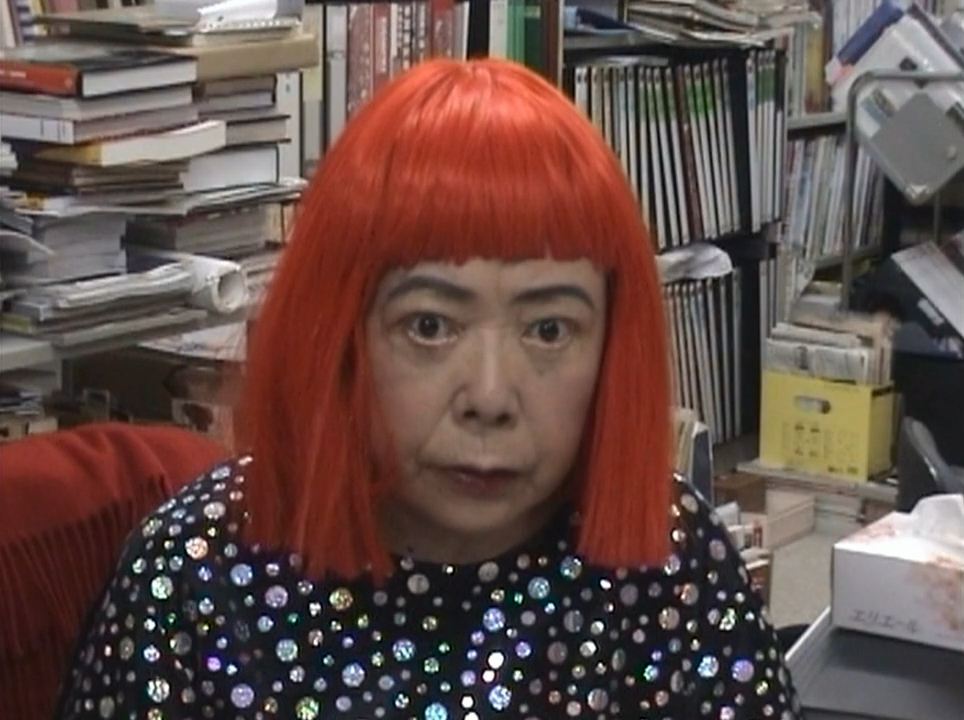

第 01 課 / 18 分鐘 / 藝術
以圓點對抗無限
草間彌生 Yayoi Kusama (1929–2026)

三分鐘版本
草間彌生 1929 年生於松本，那是長野山區一座培育種籽的小鎮。她的家境富裕，卻並不幸福。她自幼便有幻覺——成片的圓點、會說話的花朵、不斷增生直到將她吞噬的圖案。畫畫不是嗜好；那是趕在幻覺把她定格之前，先把幻覺固定在紙上的方法。
她在京都學習日本畫（nihonga），覺得那樣的訓練令人窒息，於是在 1955 年寫信給喬治亞·歐姬芙，請教如何在美國闖出一片天。1957 年 11 月，她飛抵西雅圖；半年後，她已身在紐約。到了 1959 年，她在 Brata Gallery 舉辦了紐約首場個展，展出後來成為《無限網》的那些畫作：深色底色上數以千計的細小白色迴圈，以極細的畫筆繪成，細到筆勢幾乎消失無蹤。
1960 年代是一場爆發：以填充布料製成陽具造型的軟雕塑、鏡屋、反越戰的裸體行動，以及《自戀庭園》——1,500 顆鏡面圓球在 1966 年威尼斯雙年展未經許可地裝置起來，並一顆顆地出售，直到當局出面阻止。接著，紐約對她失去了興趣。她 1973 年回到日本，並在四年之內住進東京一所精神科醫院。她餘生都待在那裡，對街的工作室就是她創作的地方。
復興始於 1980 年代末，並在 1993 年之後成為全球現象——那年她代表日本參加威尼斯雙年展，正是當年曾拒絕給她一席之地的同一個展覽。1994 年矗立於直島的《南瓜》、2017 年東京草間彌生美術館開幕，以及《無限鏡屋》巡迴展，使她成為全世界參觀人次最多的藝術家之一。她於 2026 年 8 月 14 日辭世，享壽 97 歲。
圓點是一項技術
對草間彌生最省事的解讀是「圓點」。真正有用的解讀則是：圓點是重複的單位，而重複是一部機器，用來製造一種特定的體驗——你自己與世界之間那道界線的消失。草間彌生稱之為自我消融。
這不是她後來才補上的比喻。這是她從一開始就在做的事。《無限網》不是「一幅網的畫」；那是一場由無盡細小筆痕構成的演出，拒絕中心、拒絕階層，也不給眼睛任何可以歇息之處。南瓜上的圓點以另一種尺度做著同樣的事。而那個房間，則以你身體的尺度來做。
「我每天都在對抗痛苦、焦慮與恐懼，而我所找到唯一能緩解我病情的方法，就是不斷創作藝術。」 草間彌生，引自《衛報》
The Broad 的評論文章說得更正式：《無限網》是「以顏料演出的行動、佔據空間的執念，以及字面意義上被化為可見的另一些世界」。這句話值得牢牢記住。這些畫作不是「恰好被筆痕覆蓋」的物件；它們是一項本可永遠持續下去的行動的紀錄。
資料來源：The Broad〈Yayoi Kusama〉；《衛報》。

三件必知作品
1. 《無限網》（Infinity Nets，1958–）
令她在紐約聲名大噪的畫作。細小的迴圈一筆一筆畫出，覆滿整幅畫布。遠看幾乎像是空白；近看則濃稠、有機，還帶著一絲令人不安。藝術史常拿它與帕洛克、羅斯柯、紐曼相比——但重點不是「帶有日本味的抽象表現主義」，而是：筆痕是時間的單位，而這幅畫是一種熬過時間的方式。
2. 《無限鏡屋——陽具原野》（Infinity Mirror Room—Phalli's Field，1965）
一個以鏡子鋪滿的房間，裡頭塞滿數百個填充的、布滿圓點的突起物。鏡子把這些形體複製成一整片看似無限的原野。你曾排隊進入的每一間「無限鏡屋」，祖先就是它。標題很重要：這片原野由陽具構成，而這件作品談的是恐懼與執念，不只是漂亮的燈光。
3. 《南瓜》（Pumpkin，1994）
一顆黃色、帶黑點的南瓜，立在直島的碼頭上，背後是瀨戶內海。南瓜是她童年的主題——她家培育種籽；她說過自己被南瓜「迷人又惹人喜愛的外形」深深吸引。在直島，這件雕塑既是角色，也是地平線上的一個定點。你可以繞著它走；圓點始終不變；海卻不斷改變。

仔細觀看
下次站在草間彌生的作品前，試試三件事：
- 數十道筆痕，然後停下。留意你的眼睛還想繼續數下去。那份拒絕收束，正是作品本身。
- 找出邊緣。在鏡屋裡，尋找兩面鏡子相接的縫線。那通常是房間大小唯一的線索。
- 留意你的身體。你是站著不動、排隊、向前傾，還是在走動？草間彌生的裝置，是由一個身處空間中的身體來完成的。
觀看影片
親自觀賞草間彌生的地方
- 松本市美術館——《草間彌生：我心靈的歸處》，2026 年 9 月 19 日至 12 月 6 日，另有常設館藏。回到家鄉的這場展，是最深入的一趟。
- 東京草間彌生美術館——《光芒蔓延，閃爍之物開始在我四周出現》，2026 年 10 月 8 日至 2027 年 1 月 31 日。採分時入場；週一至週三休館。
- 直島——碼頭上的戶外《南瓜》(1994)；免費，黃昏時最美。
- 香港 M+——草間彌生館藏豐富；可與奈良美智、村上隆一同觀賞。
- 阿姆斯特丹市立博物館（Stedelijk）——大型回顧展，2026 年 9 月 11 日至 2027 年 1 月 17 日。
南瓜在戶外，美術館在室內，兩者都值得繞道前往。訂位前先查各場館官網——2026 年的紀念展仍在陸續公布。
自我檢測
目前 0 / 0 題答對1. 草間彌生把自我消融於重複之中這件事稱為什麼？
2. 哪一件作品是她 1966 年首度未經許可裝置於威尼斯雙年展的？
3. 那件 1994 年、成為她最常被拍攝作品的戶外南瓜位於何處？
一手資料
讀克里斯多福·馬斯特斯刊於《衛報》的訃聞（2026 年 8 月 27 日），再去看《草間彌生：無限》(2018)。如果只讀一本書，就讀草間彌生自己的《無限網》(2002)——這本自傳就和她的作品一樣奇特而反覆，而那正是重點。
要記住的一件事：重複不是裝飾；它是一種熬過無限的技術。